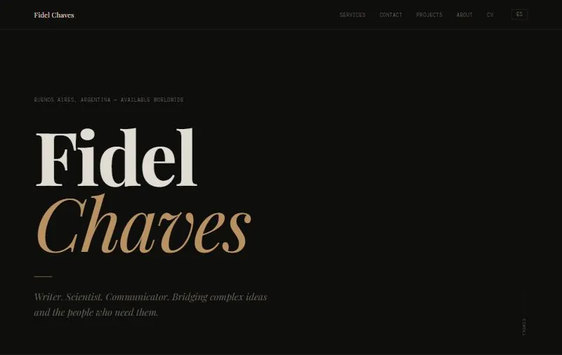
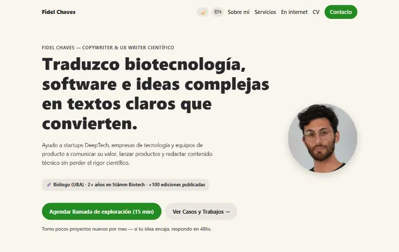
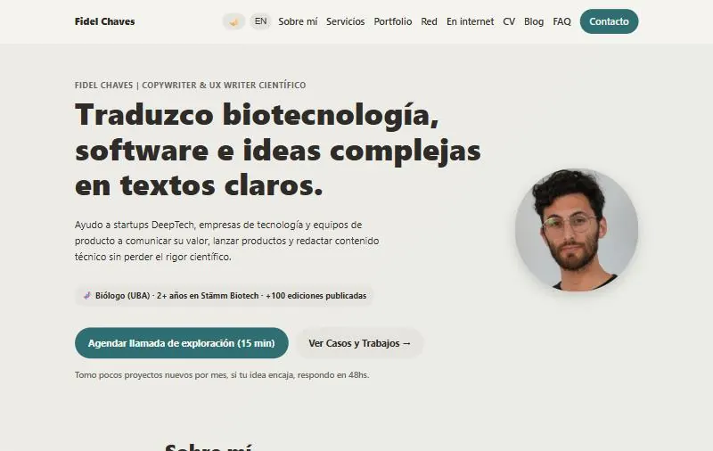
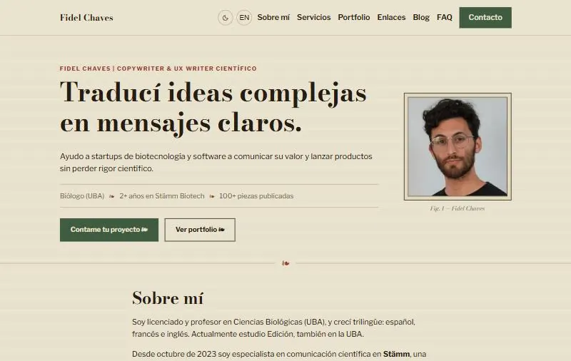
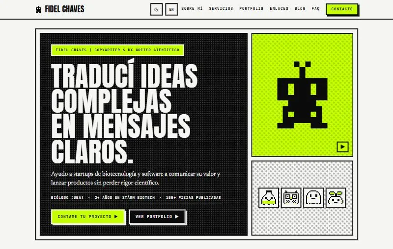
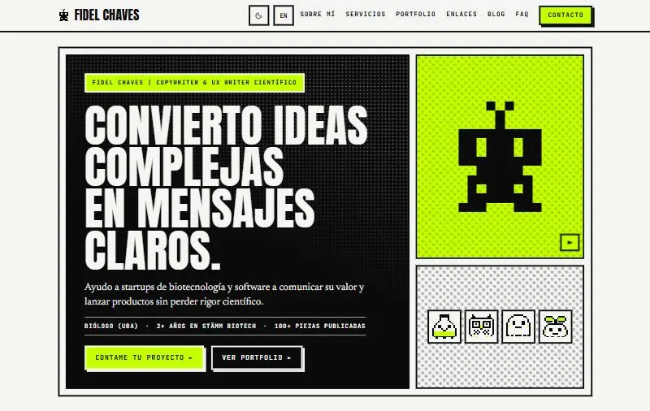

ArchivoArchive
Máquina del tiempoTime machine
Cronos cuida el reloj de arena del sitio. Elegí una fecha y te muestra cómo se veía esta página en cada versión, de la primera a hoy.Cronos looks after the site's hourglass. Pick a date and he shows you how this page looked in each version, from the first one to today.

La primera: una sola página oscura, en inglés, con letras de revista y un dorado de tapa de libro. «Writer. Scientist. Communicator.»The first one: a single dark page, in English, with magazine type and a book-cover gold. "Writer. Scientist. Communicator."
Ver el código de esa versiónSee that version's code ►
Verde bosque y textos para empresas. Llegan el inglés y el español juntos, el modo oscuro, la agenda y la foto.Forest green and copy for companies. English and Spanish arrive together, plus dark mode, booking and the photo.
Ver el código de esa versiónSee that version's code ►
Verde petróleo. Se suman el portfolio, las preguntas frecuentes, la red de colaboradores y el blog.Teal. The portfolio, the FAQ, the network of collaborators and the blog join in.
Ver el código de esa versiónSee that version's code ►
Lámina naturalista: papel crema, tipografía de enciclopedia y viñetas ❧, entre Haeckel, el Art Nouveau y Lautrec. Primeras recomendaciones.Naturalist plate: cream paper, encyclopedia type and ❧ fleurons, somewhere between Haeckel, Art Nouveau and Lautrec. First recommendations.
Ver el código de esa versiónSee that version's code ►
Mutante: tinta, tramas de cómic, verde ácido y criaturitas de píxel que se guardan en un álbum.Mutant: ink, comic halftones, acid green and little pixel creatures you collect in an album.
Ver el código de esa versiónSee that version's code ►
Estás acá. Esto sigue cambiando. Panta rei.You are here. This keeps changing. Panta rei.
Volver al presenteBack to the present ►